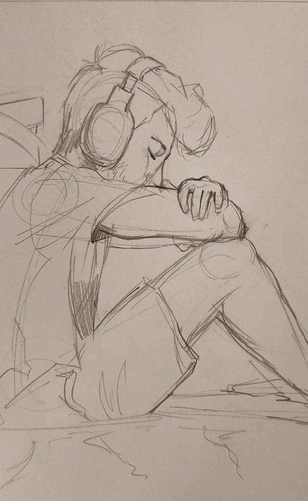

Matteo Bianchi è un artista contemporaneo di Piancamuno, classe 2005. Ha frequentato il Liceo Artistico Camillo Golgi di Breno e attualmente vive e lavora a Milano dove studia pittura all’Accademia di Belle Arti di Brera.